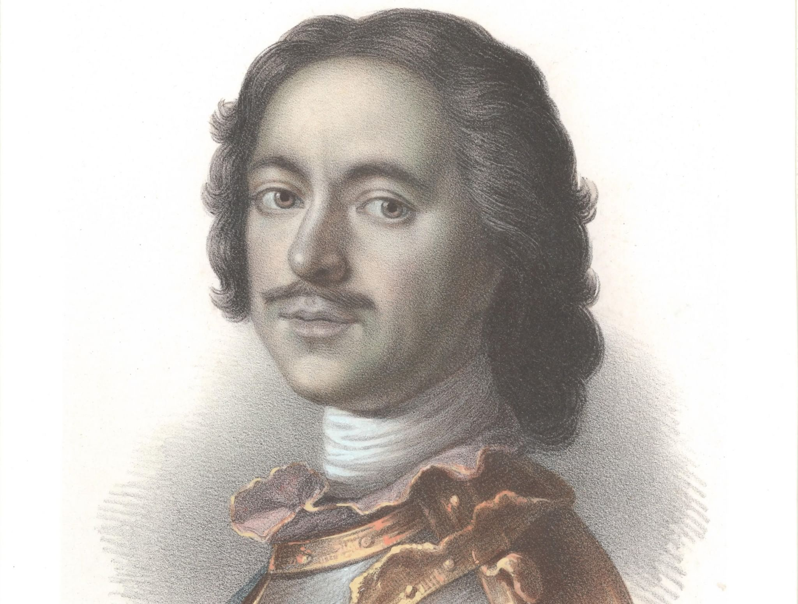

Историческая справка
Пётр I Алексеевич, прозванный Великим (1672-1725) — последний царь всея Руси (с 1682 года) и первый Император Всероссийский (с 1721 года).
Представитель династии Романовых, Пётр был провозглашён царём в 10-летнем возрасте, стал править самостоятельно с 1689 года. Формальным соправителем Петра был его брат Иван (до своей смерти в 1696 году).
С юных лет проявляя интерес к наукам и заграничному образу жизни, Пётр первым из русских царей совершил длительное путешествие в страны Западной Европы. По возвращении в 1698 году Пётр развернул масштабные реформы российского государства и общественного уклада.
Основные достижения:
- Победа в Северной войне и выход к Балтийскому морю
- Основание Санкт-Петербурга (1703)
- Провозглашение России империей (1721)
- Создание регулярной армии и флота
- Реформа государственного управления
- Развитие промышленности и торговли
- Реформа образования и создание Академии наук

Я предчувствую, что россияне когда-нибудь, а может быть, при жизни нашей пристыдят самые просвещенные народы успехами своими в науках, неутомимостью в трудах и величеством твердой и громкой славы.